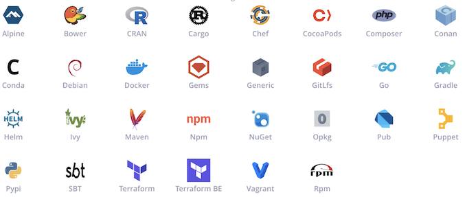
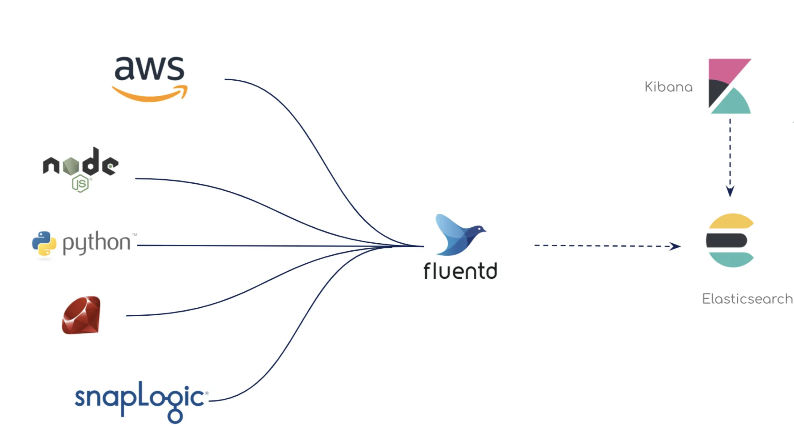
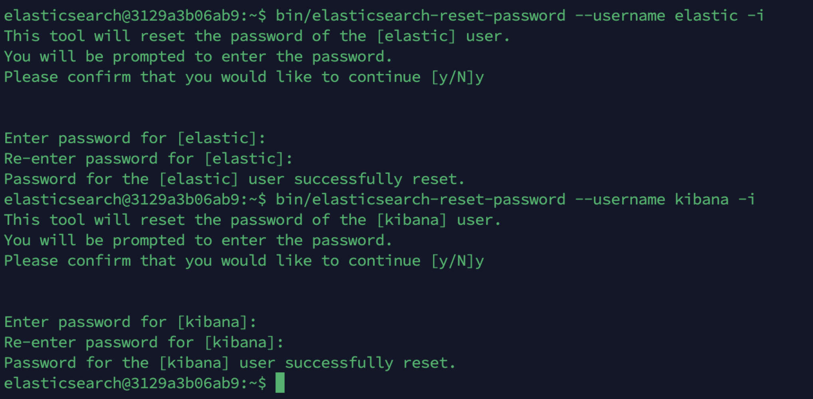
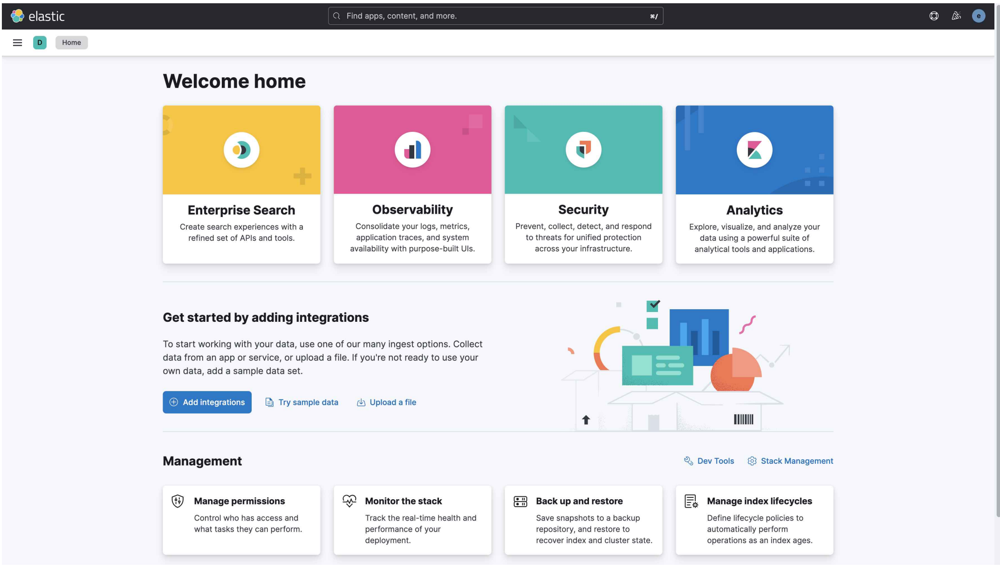
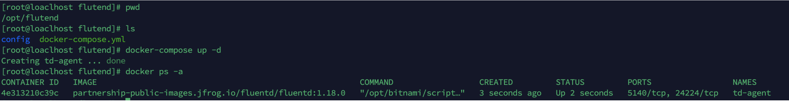
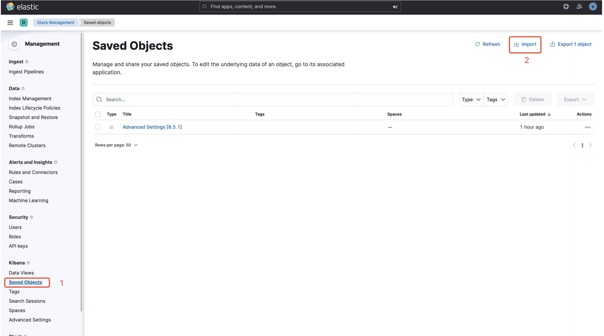
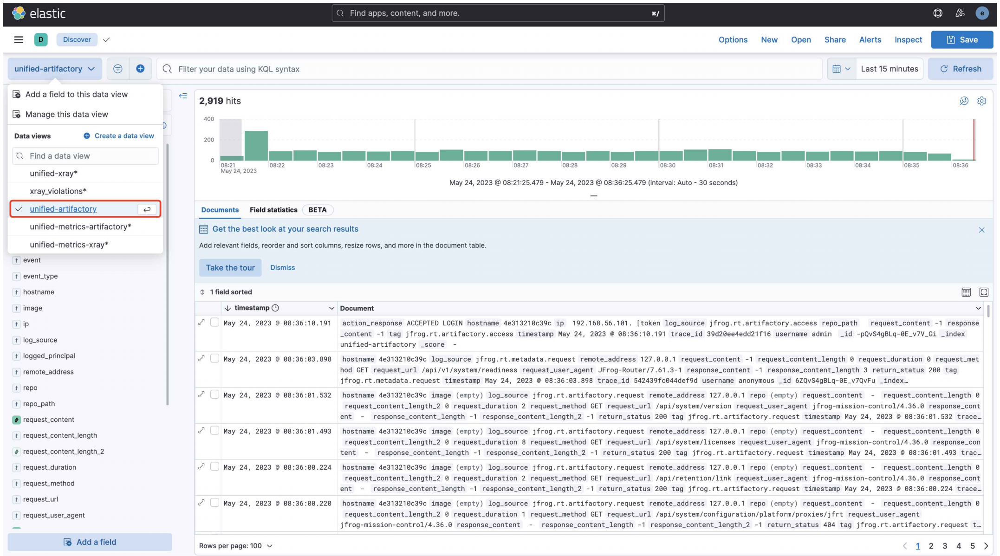
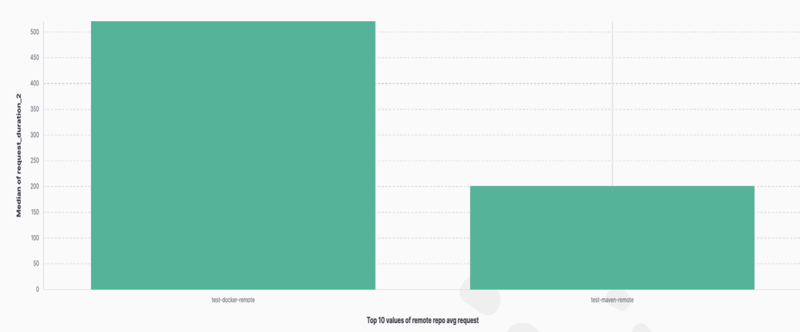

第三节 通过EFK对Artifactory进行日志分析
JFrog Artifactory

JFrog Platform

Artifactory logging回顾
Artifactory Service
- Artifactory 应用服务
- Access 认证服务
- Router 平台网关服务
- Frontend 前端服务
- Metadata 制品信息统计

Artifactory Logging
Frog Logging Doc: https://jfrog.com/help/r/jfrog-platform-administration-documentation/logging
为什么要统计日志
- 事件记录
- 错误记录
- 状态记录
可以帮我们解决什么问题
- 问题排查
- 了解状态
- 运维管理
- 实时预警

EFK介绍以及安
Elasticsearch
- 开源搜索引擎
- 支持分布式
Kibana
- Dashboards
- ES可视化平台

- docker-compose安装
- kibana.yml
-
elasticsearch
-
elasticsearch.yml
- elasticsearch/data
- elasticsearch/plugins
- elasticsearch/logs

Fluentd
- 开源
- 安装配置简单
- 统一日志处理
- Elastic + Kibana
- Splunk
- Datadog
- Prometheus + Grafana

Fluentd安装
- docker-compose安装 日志处理路径挂载
- Artifactory logs dir
- fluent.conf
- 环境变量
JF_JPD- ELSATIC

1. 环境准备：（CentOS 7）
Docker-ce安装：
yum install -y yum-utils device-mapper-persistent-data lvm2 yum-config-manager --add-repo https://download.docker.com/linux/centos/docker-ce.repo
yum install docker-ce -y
systemctl start docker && systemctl enable docker
# docker版本确认
docker --version
Docker Version 20.10.17
docker-compose安装：
sudo curl -L "https://github.com/docker/compose/releases/download/1.29.2/docker- compose-$(uname -s)-$(uname -m)" -o /usr/local/bin/docker-compose
# docker-compose版本确认 docker-compose --version
2. elasticsearch & kibana安装（8.5.1版本）
所需⽬录创建
# 创建elasticsearch & kibana挂载⽬录 mkdir -p /data/elasticsearch/{config,data,logs,plugins} mkdir -p /data/kibana/config
# 修改权限
chown 1000:1000 /data/{elasticsearch,kibana}/ -R
chmod 755 /data/{elasticsearch,kibana}/ -R
# 创建docker-compose.yml⽂件
mkdir /opt/EFK && cd /opt/EFK
- docker-compose⽂件：（
/opt/EFK/docker-compose.yml）
version: '3.2'
services:
elasticsearch:
image: elasticsearch:8.5.1
ports:
- "9200:9200"
- "9300:9300"
container_name: "elasticsearch"
enviro__nment:
- discovery.type=single-node
- "ES_JAVA_OPTS=-Xms1G -Xmx4G"
restart: always
volumes:
- /data/elasticsearch/config/elasticsearch.yml:/usr/share/elasticsearch/co
- /data/elasticsearch/data:/usr/share/elasticsearch/data
- /data/elasticsearch/plugins:/usr/share/elasticsearch/plugins - /data/elasticsearch/logs:/data/elasticsearch/logs
kibana:
image: kibana:8.5.1
ports:
- "5601:5601"
container_name: "kibana"
environment:
- ELASTICSEARCH_HOSTS=http://192.168.56.134:9200
- ELASTICSEARCH_USERNAME=kibana
- ELASTICSEARCH_PASSWORD="123456"
restart: always
depends_on:
- elasticsearch
volumes: - /data/kibana/config/kibana.yml:/usr/share/kibana/config/kibana.yml
3. 配置⽂件：
elasticsearch.yml (/data/elasticsearch/config/elasticsearch.yml)
cluster.name: "EFK-cluster"
network.host: 0.0.0.0
http.cors.allow-origin: "*"
http.cors.enabled: true
http.cors.allow-headers: Authorization,X-Requested-With,Content-Length,Content-T
xpack.security.enabled: true
xpack.security.enrollment.enabled: true
kibana.yml (/data/kibana/config/kibana.yml)
server.name: kibana
server.host: "0.0.0.0"
elasticsearch.hosts: [ "http://192.168.56.134:9200" ]
xpack.monitoring.ui.container.elasticsearch.enabled: true
# 中⽂可选
i18n.locale: "zh-CN"
- elasticsearch & kibana服务启动配置
# 需要提前准备好elasticsearch & kibana所需镜像
docker pull elasticsearch:8.5.1
docker pull kibana:8.5.1 45
# docker-compose启动
cd /opt/EFK
docker-compose up -d
# 检查启动状态
docker-compose ps
# 通过log检查服务启动状态，查看是否有其他的异常
docker-compose logs -f --tail 100 elasticsearch
docker-compose logs -f --tail 100 kibana
- 重置elasticsearch & kibana密码

# 进⼊到elasticsearch容器中
docker exec -it elasticsearch bash
# 重置⽤⼾密码（elasticsearch V8不再允许使⽤elastic⽤⼾进⾏配置）
# 重置elastic⽤⼾密码
bin/elasticsearch-reset-password --username elastic -i
# 重置kibana⽤⼾密码
bin/elasticsearch-reset-password --username kibana -i 12345678

- 重启服务
# docker-compose重启
docker-compose down
docker-compose up -d
# 检查启动状态
docker-compose ps

4. 服务验证
# 验证elasticsearch启动状态
curl localhost:9200 -u elastic
# 访问elasticsearch & kibana前端，使⽤elastic⽤⼾登录
http://192.168.56.134:5601


Flutend安装配置
- 环境准备：（CentOS 7）
Flutend作为⽇志收集客⼾端，需要安装在Artifactory节点上
- Docker-ce安装：
yum install -y yum-utils device-mapper-persistent-data lvm2
yum-config-manager --add-repo https://download.docker.com/linux/centos/docker-ce.repo
yum install docker-ce -y
systemctl start docker && systemctl enable docker
# docker版本确认
docker --version
docker-compose安装：
sudo curl -L "https://github.com/docker/compose/releases/download/1.29.2/docker- compose-$(uname -s)-$(uname -m)" -o /usr/local/bin/docker-compose
# docker-compose版本确认
docker-compose --version
- Artifactory中需要开启metrics，开启后重启Artifactory⽣效：
# Artifactory $JFROG_HOME/artifactory/var/etc/system.yaml 新增如下参数
shared:
metrics:
enabled: true
artifactory:
metrics:
enabled: true
mc:
enabled: true
2. flutend安装（docker-compose）
- 所需⽬录创建
# 创建项⽬⽬录
mkdir /opt/flutend/config -p
# 权限修改
hown 1000:1000 /opt/flutend -R
chmod 755 /opt/flutend -R
docker-compose⽂件：（/opt/flutend/docker-compose.yml），将⽣成的API Key和Access token填写到yml⽂件中
version: '3.2'
services:
td-agent:
image: partnership-public-images.jfrog.io/fluentd/fluentd:1.18.0
container_name: "td-agent"
environment:
- JF_PRODUCT_DATA_INTERNAL=/opt/jfrog/artifactory/var/
- JF_JPD_URL=http://192.168.56.135:8082
- JF_JPD_USER_NAME=admin
- JF_JPD_API_KEY=xxx
- JF_JPD_TOKEN=xxx
- ELASTIC_USER=elastic
- ELASTIC_PASSWORD=xxx
- ELASTIC_SCHEME=http
- ELASTIC_SSL_VERIFY=false
restart: always
volumes:
- /opt/flutend/config:/etc/td-agent
- /opt/jfrog/artifactory/var/:/opt/jfrog/artifactory/var/
command: ["fluentd","-v","-c","/etc/td-agent/fluent.conf"]
- fluent.conf配置⽂件(
/opt/fluentd/config/fluent.conf)
<source>
@type tail
@id access_service_tail
path "#{ENV['JF_PRODUCT_DATA_INTERNAL']}/log/access-service.log"
pos_file "#{ENV['JF_PRODUCT_DATA_INTERNAL']}/log/access-service.log.pos"
tag jfrog.rt.access.service
<parse>
@type none
</parse>
</source>
<source>
@type tail
@id artifactory_service_tail
path "#{ENV['JF_PRODUCT_DATA_INTERNAL']}/log/artifactory-service.log"
pos_file "#{ENV['JF_PRODUCT_DATA_INTERNAL']}/log/artifactory-service.log.pos"
tag jfrog.rt.artifactory.service
<parse>
@type none
</parse>
</source>
<source>
@type tail
@id frontend_service_tail
path "#{ENV['JF_PRODUCT_DATA_INTERNAL']}/log/frontend-service.log"
pos_file "#{ENV['JF_PRODUCT_DATA_INTERNAL']}/log/frontend-service.log.pos"
tag jfrog.rt.frontend.service
<parse>
@type none
</parse>
</source>
@type tail
@id metadata_service_tail
path "#{ENV['JF_PRODUCT_DATA_INTERNAL']}/log/metadata-service.log"
pos_file "#{ENV['JF_PRODUCT_DATA_INTERNAL']}/log/metadata-service.log.pos"
tag jfrog.rt.metadata.service
<parse>
@type none
</parse>
</source>
<source>
@type tail
@id router_service_tail
path "#{ENV['JF_PRODUCT_DATA_INTERNAL']}/log/router-service.log"
pos_file "#{ENV['JF_PRODUCT_DATA_INTERNAL']}/log/router-service.log.pos"
tag jfrog.rt.router.service
<parse>
@type none
</parse>
</source>
# Strip out color codes then field extract the service fields
<filter jfrog.rt.**.service>
@type record_transformer
enable_ruby true
<record>
message ${record["message"].gsub(/\e\[([;\d]+)?m/, '')}
</record>
</filter>
<filter jfrog.rt.**.service>
@type parser
key_name message
<parse>
@type multiline
format_firstline /\d{4}-\d{1,2}-\d{1,2}/
format1 /^(?<timestamp>[^ ]*) \[(?<service_type>[^\]]*)\] \[(?<log_level>[
</parse>
</filter>
# End Service Fields Extraction
<source>
@type tail
@id router_traefik_tail
path "#{ENV['JF_PRODUCT_DATA_INTERNAL']}/log/router-traefik.log"
pos_file "#{ENV['JF_PRODUCT_DATA_INTERNAL']}/log/router-traefik.log.pos"
tag jfrog.rt.router.traefik
<parse>
@type multiline
format_firstline /\d{4}-\d{1,2}-\d{1,2}/
format1 /^(?<timestamp>[^ ]*) \[(?<service_type>[^\]]*)\] \[(?<log_level>[
</parse>
</source>
<source>
@type tail
@id access_request_tail
path "#{ENV['JF_PRODUCT_DATA_INTERNAL']}/log/access-request.log"
pos_file "#{ENV['JF_PRODUCT_DATA_INTERNAL']}/log/access-request.log.pos"
tag jfrog.rt.access.request
<parse>
@type regexp
expression ^(?<timestamp>[^ ]*)\|(?<trace_id>[^\|]*)\|(?<remote_address>[^\|
</parse>
</source>
<source>
@type tail
@id artifactory_request_tail
path "#{ENV['JF_PRODUCT_DATA_INTERNAL']}/log/artifactory-request.log"
pos_file "#{ENV['JF_PRODUCT_DATA_INTERNAL']}/log/artifactory-request.log.pos"
tag jfrog.rt.artifactory.request
<parse>
@type regexp
expression ^(?<timestamp>[^ ]*)\|(?<trace_id>[^\|]*)\|(?<remote_address>[^\|
</parse>
</source>
<filter jfrog.rt.artifactory.request>
@type record_transformer
enable_ruby true
<record>
repo ${record["request_url"].include?("/api/docker") && !record["request_url
image ${record["request_url"].include?("/api/docker") && !record["request_ur
</record>
</filter>
<source>
@type tail
@id frontend_request_tail
path "#{ENV['JF_PRODUCT_DATA_INTERNAL']}/log/frontend-request.log"
pos_file "#{ENV['JF_PRODUCT_DATA_INTERNAL']}/log/frontend-request.log.pos" 1
tag jfrog.rt.frontend.request
<parse>
@type regexp
expression ^(?<timestamp>[^ ]*)\|(?<trace_id>[^\|]*)\|(?<remote_address>[^\|
</parse>
</source>
<source>
@type tail
@id metadata_request_tail
path "#{ENV['JF_PRODUCT_DATA_INTERNAL']}/log/metadata-request.log"
pos_file "#{ENV['JF_PRODUCT_DATA_INTERNAL']}/log/metadata-request.log.pos"
tag jfrog.rt.metadata.request
<parse>
@type regexp
expression ^(?<timestamp>[^ ]*)\|(?<trace_id>[^\|]*)\|(?<remote_address>[^\|
</parse>
</source>
<source>
@type tail
@id router_request_tail
path "#{ENV['JF_PRODUCT_DATA_INTERNAL']}/log/router-request.log"
pos_file "#{ENV['JF_PRODUCT_DATA_INTERNAL']}/log/router-request.log.pos"
tag jfrog.rt.router.request
<parse>
@type json
</parse>
</source>
<source>
@type tail
@id artifactory_access_tail
path "#{ENV['JF_PRODUCT_DATA_INTERNAL']}/log/artifactory-access.log"
pos_file "#{ENV['JF_PRODUCT_DATA_INTERNAL']}/log/artifactory-access.log.pos"
tag jfrog.rt.artifactory.access
<parse>
@type regexp
expression /^(?<timestamp>[^ ]*) \[(?<trace_id>[^\]]*)\] \[(?<action_respons
</parse>
</source>
<source>
@type tail
@id access_security_audit_tail
path "#{ENV['JF_PRODUCT_DATA_INTERNAL']}/log/access-security-audit.log"
pos_file "#{ENV['JF_PRODUCT_DATA_INTERNAL']}/log/access-security-audit.log.pos
tag jfrog.rt.access.audit
<parse>
@type regexp
expression /^(?<timestamp>[^ ]*)\|(?<token_id>[^ ]*)\|(?<user_ip>[^ ]*)\|(?<
</parse>
</source>
<filter jfrog.**>
@type record_transformer
<record>
hostname "#{Socket.gethostname}"
log_source ${tag}
</record>
</filter>
<source>
@type exec
tag jfrog.callhome
command "curl --request GET 'http://localhost:8081/artifactory/api/system/vers run_interval 1d
<parse>
@type json
</parse>
</source>
<filter jfrog.callhome>
@type record_transformer
renew_record true
keep_keys 'productId,features'
enable_ruby true
<record>
productId 'jfrogLogAnalyticsElastic/0.9.0'
features ${return([{"featureId" => "ArtifactoryVersion/" + record["version"]
</record>
</filter>
<match jfrog.callhome>
@type http
endpoint http://localhost:8081/artifactory/api/system/usage
open_timeout 5
content_type application/json
headers {"Authorization":"Bearer <TOKEN>"}
<format>
@type json
</format>
<buffer>
flush_interval 5s
</buffer>
</match>
<filter jfrog.rt.artifactory.request>
@type record_transformer
enable_ruby true
<record>
repo ${record["request_url"].include?("/api/docker") && !record["request_url
image ${record["request_url"].include?("/api/docker") && !record["request_ur
</record>
</filter>
<filter jfrog.rt.artifactory.request>
@type record_transformer
enable_ruby true
<record>
response_content_length_2 ${record["response_content_length"].to_f}
request_content_length_2 ${record["request_content_length"].to_f}
</record>
</filter>
###JFROG METRICS Plugin
<source>
@type jfrog_metrics
@id metrics_http_jfrt
tag jfrog.metrics.artifactory
interval 5s
metric_prefix 'jfrog.artifactory'
jpd_url http://192.168.56.135:8082
username admin
apikey AKCp8ohUb3ShLFuU9ydRa9rLE6LbZCn3xYs7txHH78L8jGG7boL5xqsECTZssbTSz6tbTNi
token eyJ2ZXIiOiIyIiwidHlwIjoiSldUIiwiYWxnIjoiUlMyNTYiLCJraWQiOiJ0YmhLQWVNVFh6 target_platform "ELASTIC"
</source>
########################
# ELASTIC OUTPUT METRICS
########################
<match jfrog.metrics.**>
@type elasticsearch
@id elasticsearch_metrics
host 192.168.56.134
port 9200
user elastic
password 123456
# scheme "http"
# ssl_verify "false
index_name unified-metrics-artifactory
include_tag_key true
type_name fluentd
logstash_format false
include_timestamp true
</match>
#END ELASTIC OUTPUT
# <match jfrog.metrics.**>
# @type stdout
# </match>
########################
# ELASTIC OUTPUT LOGS
########################
<match jfrog.**>
@type elasticsearch
@id elasticsearch_logs
host 192.168.56.134
port 9200
user elastic
password 123456
# scheme "#{ENV['ELASTIC_SCHEME']}"
# ssl_verify "#{ENV['ELASTIC_SSL_VERIFY']}"
index_name unified-artifactory
include_tag_key true
type_name fluentd
logstash_format false
</match>
#END ELASTIC OUTPUT
# <match jfrog.**>
# @type stdout
# </match>
Flutend 服务启动
# 需要提前准备好Flutend所需镜像
docker pull partnership-public-images.jfrog.io/fluentd/fluentd:1.18.0 34
# docker-compose启动
cd /opt/flutend
docker-compose up -d
# 检查启动状态
docker-compose ps
# 通过log检查服务启动状态，查看是否有其他的异常
docker-compose logs -f --tail 100

三、EFK配置调
1. elasticsearch索引
登录elasticsearch后点击Management，当fluentd向ES成功发送数据后，可以在Index Management看到unified-artifactory和 unified-metrics-artifactory两个Index

2. 导⼊模版
导⼊JFrog Github项⽬中提送的NSJSON⽂件，点击Save Object，点击Import导⼊ kibana_dashboard_v1.ndjson

3. Dashboard调试
点击Discover可以看到unified-artifactory和unified-metrics-artifactory下的数据


点击Dashboard可以看到导⼊的Artifactory相关的模版

EFK自定义可视化图表监控
EFK集成自定义可视化图表
remote仓库平均请求时长
- artifactory-request-out.log
- fluent.conf添加source
ES中添加图表
- remote avg request

EFK集成自定义可视化图表
source
- 指定
request-out log - 过滤字段
转换request_duration
- 添加fileter